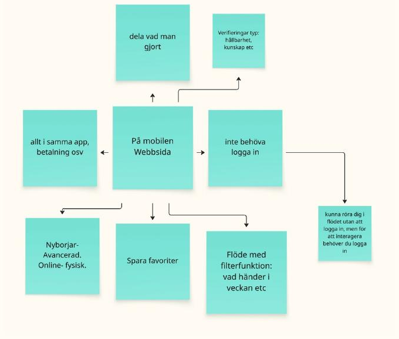
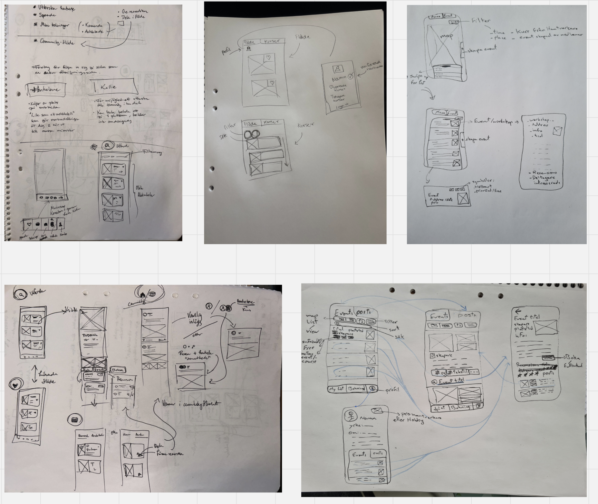
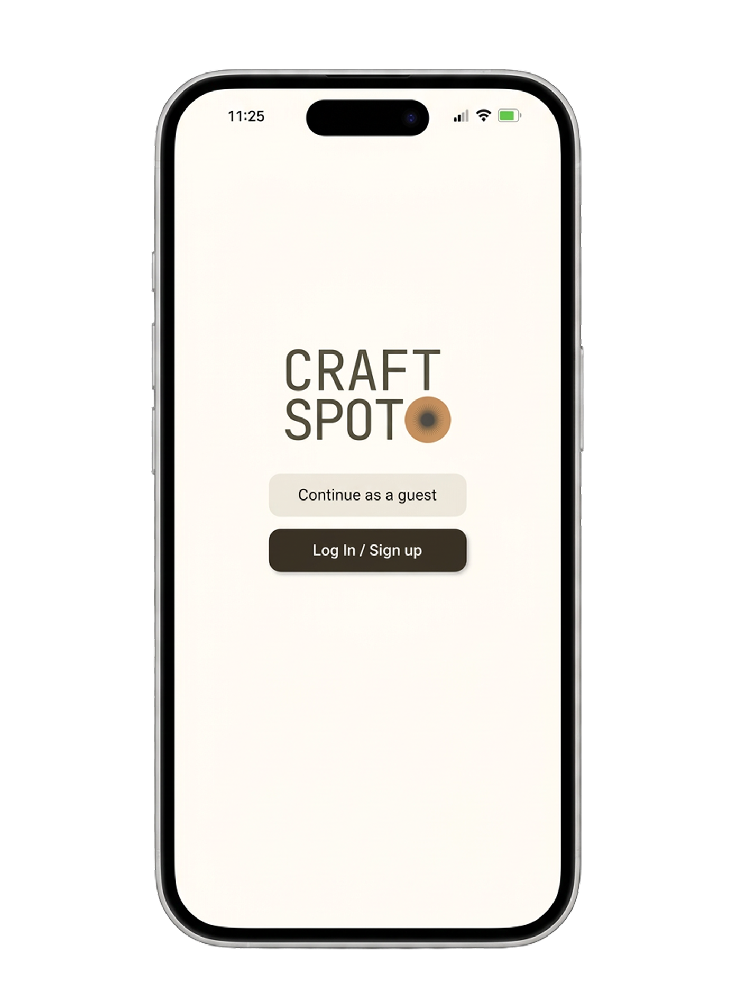
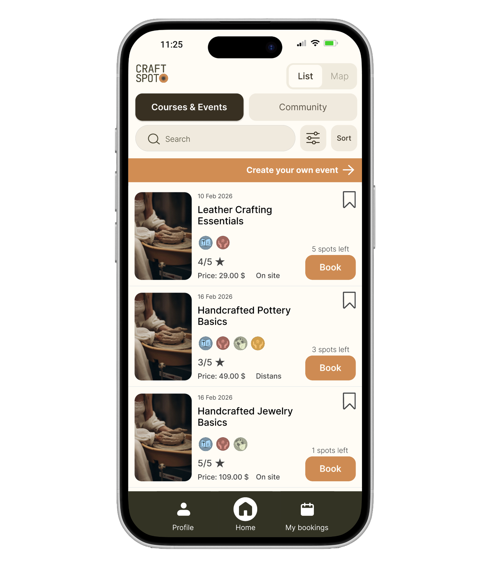
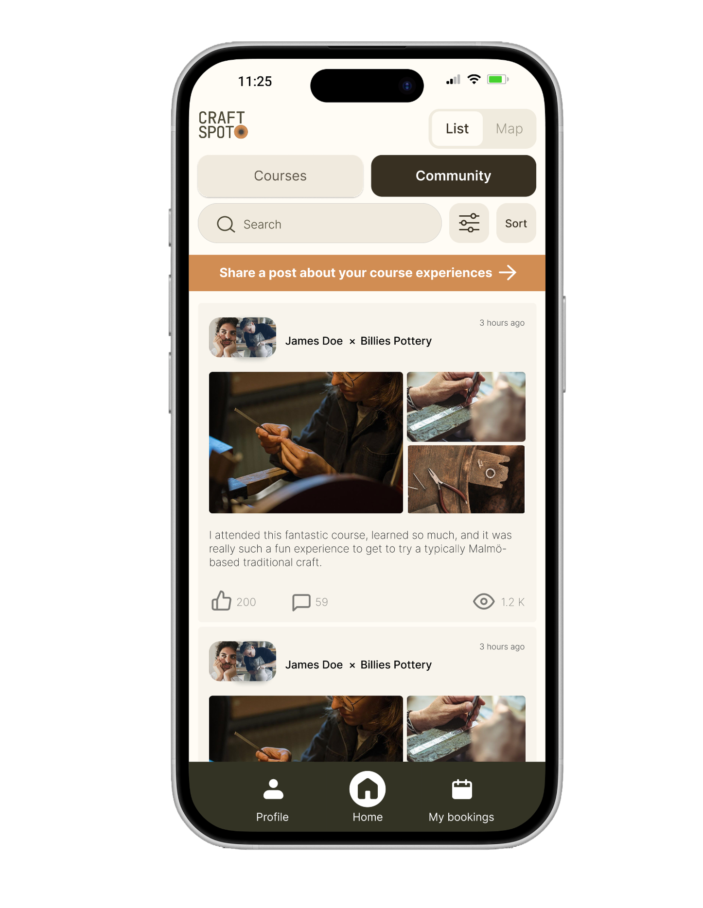
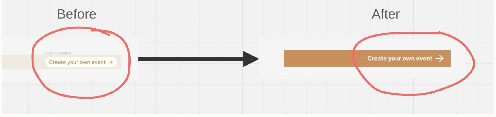

02. craftspot
a digital platform connecting local makers with people looking for handcrafted, one-of-a-kind goods
the challenge
Traditional craft is a significant part of Europe's cultural heritage, but it's disappearing — squeezed out by industrialisation, mass production, and a shrinking group of active practitioners. The knowledge that once passed between generations is gradually being lost, and craftspeople struggle to compete with cheaper, industrial alternatives.
Rather than focusing only on professional education paths, we chose to look at a broader, often overlooked group: hobbyists and curious beginners. If more people could easily discover courses, events, and communities around traditional craft, that interest could help keep these traditions alive — while also creating better economic conditions for professional makers.
"How might we connect society members with traditional craftsmanship?"
"How might we support the preservation of traditional crafts through a digital platform?"
my approach
I worked on this project together with Embla Lundqvist, George Dantorp and Osama Sadek, following a double-diamond process across four phases: discover, define, develop and deliver.
We started with desktop research into how traditional craft is discussed academically, followed by interviews with eight stakeholders — four self-employed craftspeople and four hobbyists actively doing or wanting to learn a craft. We combined this with observations of a few craftspeople teaching, to understand what a course setting actually looks like in practice.

From there, we built a stakeholder map and an affinity diagram to cluster our interview findings into themes — challenges, sustainability, and learning kept surfacing as the strongest patterns. We used those clusters to build two personas: one representing the craftsperson, one representing the person looking to learn. Every design decision after this point got checked against what these two personas would actually need.
In the develop phase, we moved from tree diagrams and mind maps to hands-on sketching — first on paper, then on a whiteboard together in person, and finally into low- and high-fidelity wireframes in Figma.

the solution
CraftSpot combines two things that no existing platform we found managed to do well together: course booking and community. One tab lets people browse and book local craft courses; the other is a feed where people can share what they made, ask questions, and get inspired by others.



We deliberately left out features like direct messaging and open, unstructured posting — a hard call, but one made to keep the platform focused on craft learning rather than risking it turning into a generic social feed. We also built a set of sustainability and origin verification icons for each listing, though usability testing later showed these needed more explanation to feel trustworthy rather than decorative.
the result
We tested the high-fidelity prototype with four stakeholders using a think-aloud protocol, followed by short critique-style questions about what felt meaningful, confusing, or missing.
The clearest finding was about two specific buttons: "create event" and "share a post." Both were central to what makes CraftSpot different from a plain booking app — they're what let craftspeople market themselves for free and let the community grow from the bottom up. But in testing, both buttons were hard to find. That mattered more than a typical usability nitpick, because if people can't find the features that make the platform work as a two-way exchange, the whole concept quietly fails.

Small design choices — button size, placement, contrast — turned out to be directly tied to whether the platform could fulfil its actual purpose, not just whether it looked clean.
We used the test feedback to make the button larger, higher-contrast, and more consistently placed across the app — along with smaller consistency fixes elsewhere in the interface.
If I continued this project, I'd want to dig deeper into the verification system specifically — testing showed people questioned who gets to decide what counts as "genuine" craft, which is a much bigger design question than icon clarity alone.